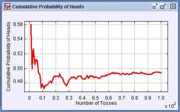
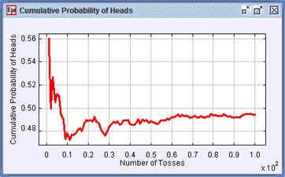

|
 |
|
|
 |
這個模擬程式使用 Easy Java Simulations (Ejs) 來模擬丟 N 個硬幣的問題。這個模擬程式允許使用者變更投擲錢幣數 N，以及丟到 "正面" 的機率 p。投擲的結果會用一便士的圖樣顯示在螢幕上，並將累積正面機率與投擲次數關係圖畫出來。
Questions
1. 從 N = 2 and p = 0.5 開始，兩個 "公平"的硬幣。這個情況跟古代的賭博遊戲類似，參賽者對丟硬幣的結果下注，一開始他們想出有三種結果，兩個正面，兩個反面，一正一反，並有相同的機率，各1/3。但沒多久他們便發覺這是不正確的，執行這個模擬，並重複10次，你覺得古代人說的對嗎?重置後再重複100次，你覺得古代人說的對嗎?為什麼呢?真正的機率是多少呢?
2. 從 N = 50 和 p = 0.5 開始, 五十個 "公平" 的硬幣。重置模擬一次一步丟10次。結果和你預期的一樣嗎?為什麼呢?
3. 你自己計算的結果和圖一不一樣?為什麼?你怎麼得知的?如果投擲數是2次結果又如何呢?100次?/p>
4. 從 p = 0.6 開始。用一次前進一步的按鈕將一個硬幣丟10次。你看得出硬幣是不公平的嗎?要多少次投擲才能說服你他真的不"公平"呢?